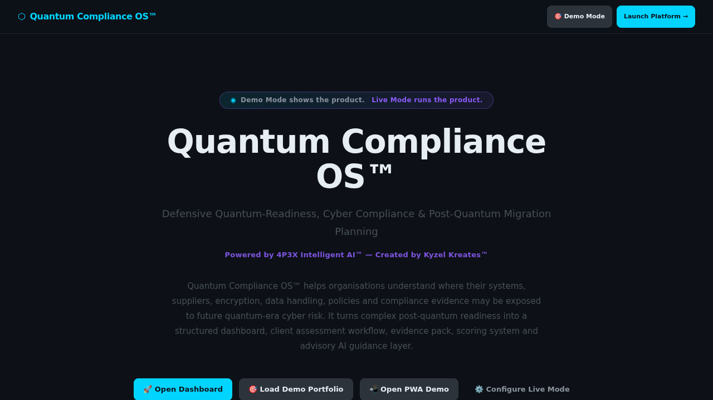

Demo Mode shows the product. Live Mode runs the product — once connected to a real backend, authentication, persistent records, and real-time sync.
What it is
Quantum Compliance OS™ is a defensive cyber-readiness platform that helps organisations understand where their systems, suppliers, encryption, data handling, and compliance evidence may be exposed to future quantum-era cyber risk — and what steps to take now.
Where it can be used
SMEs, enterprise IT departments, compliance consultancies, insurance providers, public sector organisations, and any business handling sensitive encrypted data.
Why it was built
Post-quantum cryptographic migration is a growing regulatory and commercial concern. Most SMEs have no structured way to assess their exposure, capture evidence, or demonstrate readiness to clients, insurers, or boards.
When it is useful
When an organisation needs to assess its quantum-readiness posture, evidence its compliance planning, prepare for future regulatory requirements, or advise clients on post-quantum cryptographic risk.
Who it helps
CISOs, IT compliance managers, cyber consultants, risk advisers, board-level decision makers, and SME owners who need to understand their cryptographic risk profile.
How it works
Features a compliance dashboard with readiness scoring, evidence pack management, portfolio assessment workflows, a PWA for mobile compliance checks, and an AI advisory layer for guided readiness planning.
Key features
Architecture behind it
Refactored from the 4P3X base with compliance-sector data model, scoring logic, evidence capture system, and advisory AI configuration. Purely defensive and compliance-focused.
Demo Mode to Live Mode pathway
Demo Mode shows the full compliance workflow with sample organisation data and evidence packs. Live Mode connects real client records, secure evidence storage, audit logs, and reporting exports.
What it can become next
Could expand to include regulatory change monitoring, insurance integration, supplier assessment modules, and automated compliance report generation for NCSC/ISO alignment.
Investor and employer relevance
Demonstrates forward-thinking product development in an emerging compliance market — showing the creator's ability to tackle technically complex, high-value sectors with a structured, advisory-focused approach.